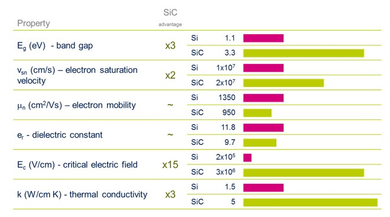
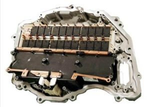

ST Microelectronics Bets on SiC; A Look at Power Device Packaging
Silicon Carbide (SiC) is a wide bandgap (WBG) material that has advantages when compared to silicon (Figure 1). For the same die size and thickness, WBG devices provide higher breakdown voltage, current, operating temperature, and switching speed; and lower switching loss over Si devices.
Figure 1: Comparison of SiC and Si properties demonstrating a clear advantage for SiC.
ST Microelectronics (ST Micro) started working with SiC in 1996, producing its first SiC diodes in 2004. In 2009 ST started to produce its first SiC MOSFETs and power Schottky diodes. ST Micro’s 150mm SiC wafer production started in 2017.
One of the main advantages of SiC devices is its capability to operate at high temperatures. When a power chip can operate at high temperature, the cooling cost can be reduced and the overall system size can be reduced as a result of a downsized cooling system.
Building a SiC Infrastructure
ST Micro just announced an agreement to acquire 55% of Swedish silicon carbide wafer manufacturer Norstel AB with an option to acquire the remaining 45% for a total purchase price of $137MM. Norstel, headquartered in Norrkoping, Sweden, was founded in 2005 as a spinoff of Linköping University. It develops and manufactures advanced 150mm silicon carbide bare and epitaxial wafers. After this acquisition, ST Micro will control the entire SiC device supply chain to address growing automotive and industrial applications. ST Micro claims to be the only semiconductor company with automotive-grade silicon carbide in mass production today.
In Jan of 2019 Cree and ST Micro announced a multi-year SiC wafer supply agreement.
Cree has been steadily reducing its activity in the lighting market while focusing more on power and RF products under its Wolfspeed division. Within the power electronics market segment, Cree’s SiC products have seen significant use in electric vehicles. Although SiC-based components are more expensive, they are useful for electric vehicles (EV) because they allow EV manufacturers to maximize the range of their batteries, reduce cooling requirements, and minimize the footprint of the inverter and battery in the vehicle.
Applications
Power electronics is key in the conversion of all sorts of electrical power (ac-dc converters, ac-ac converters, dc-dc converters, dc-ac converters, etc). These are enabling technologies for new and growing applications such as power grids, trains, solar energy, wind energy, and EVs. SiC applications currently include solar inverters, industrial motor drives, home appliances, and power adapters.
Figure 2: Model 3 main inverter – featuring 24 SiC MOSFET modules from St Microelectronics (Source: Munro Associates)
Tesla has been integrating SiC MOSFET based power modules from ST Micro in its Model 3 inverter. The modules are molded modules using copper ribbon-bonding for MOSFET connection. Packaging design was done by Boschman in the Netherlands
The Boschman group focuses on applications that benefit from their FAM technology (for double-sided cooling) and their Ag-sinter technology for increased performance and reliability. SiC Power modules are also commercially available from Wolfspeed, RHOM, GeneSiC, Infineon, and SEMIKRON. Commercially available packages from STMicroelectronics and CREE support device junction temperature up to 200°C.
The packaging of SiC Devices
Power device packaging has become a bottleneck for WBG device applications.
State-of-the-art silicon packaging material systems can operate up to 175ºC which is incompatible with the limits of Si devices. WBG devices, which can operate at much higher temperatures (200-350ºC) and electric fields (10x than Si devices), requires updated packaging material systems to provide compatible high breakdown voltage strength, compatible thermal-mechanical characteristics for better coefficient of thermal expansion (CTE) matching with SiC material, and the capability of withstanding higher operating temperatures. These challenges mainly characterized to four parts – (1) substrate, (2) die attachment, (3) bonding and (4) encapsulation.
Substrate
A power packaging substrate consists of two metal layers and an insulation layer, usually a ceramic layer, in the middle. Substrates fall into four major categories: direct bonded copper (DBC), direct bonded aluminum (DBA), insulated metal baseplate (IMB) and thick film copper.
Die-Attaching Materials
Typical die-attach materials include (1) epoxy adhesives, (2) alternative resins, (3) eutectic die-attach solders, (4) soft soldering and (5) silver-glass materials. The two most commonly used die-attach materials today are solder alloys and conductive epoxy. Most silver filled epoxies fail at temperatures and thus are not useful for power electronics devices.
Beyond 200 ºC, (1) In the low-temperature range (200~300 ºC), the tin-lead (Pb-Sn) and lead-free tin-silver-copper (SAC) alloy ;(2) in the middle range 300~400 ºC, the tin-lead (Sn-Pb) solder systems have high liquidus points and they have been popular for high-temperature die-attach materials, however since the ban on Pb solders in 2006, their use in consumer electronics in the whole electronics industry are frowned upon.
Low-temp silver sintering is another option. This process is based on the spontaneous sinterability of silver particles in the nano and micro scale with applied pressure at temperatures of above 220 °C. Silver sintered interconnections show numerous advantages such as high melting point of 961°C, a far better thermal conductivity (250 W/mK) and an enhanced electrical conductivity. In addition, they show considerably enhanced reliability in thermal and power cycling tests.
Diffusion soldering, also called transient liquid phase bonding (TLPB) describes an interconnection technology based on diffusion. These bonding layers can be composed of Ag/In, Ag/Sn, Au/In, Au/Sn [95, Cu/Sn, and Ni/Sn Considering cost, the Cu-Sn appears to be a good candidate for high-temperature applications.
Bonding Methods
Copper wire bonding and ribbon bonding are standard technologies for connecting high current interconnections in power electronics assemblies.
Encapsulation
Encapsulation materials protect the power module components from external environmental damage, such as moisture, solvents, gases, etc. In addition, encapsulation materials improve the voltage ratings of the packages, in high voltages modules (>1000 V) and prevent arcing between different electrodes. However, the soft conventional polymeric encapsulation materials mainly designed for Si conventional module are limited to low-temperature use (~ 200 °C). This is an area still looking for a low-cost general solution.